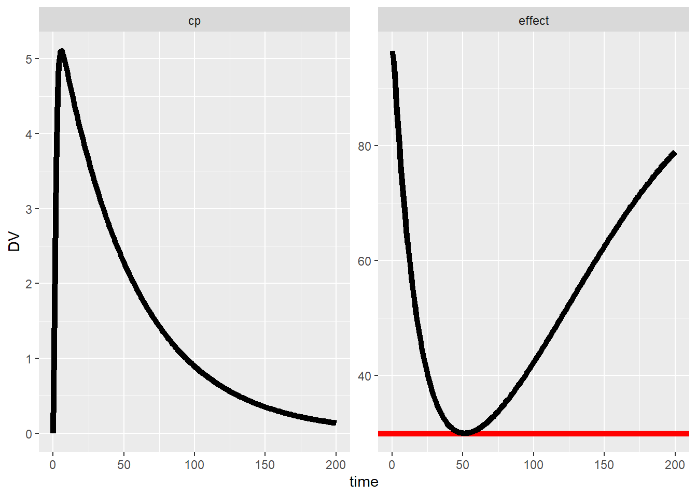

Using optiDoseR with nlmixr2 allows to have a full pharmacometrics (PMX) workflow of preparing data, fitting and estimating PMX parameters, and estimating optimal typical and individual doses to fulfill a therapeutic goal.
For the entire workflow, the tidyverse package is utilized for data processing, the nlmixr2 package for fitting the data and simulating, and the optiDoseR package to generate the required model code for estimating doses.
library(optiDoseR)
library(tidyverse)
library(nlmixr2)In this example, we’re looking at the prominent warfarin PKPD example. To this end, the structural model for a one-compartment PKPD model with indirect response is set up in the nlmixr2 model-structure.
pk.turnover <- function() {
ini({
tktr <- log(1)
tka <- log(1)
tcl <- log(0.1)
tv <- log(10)
##
eta.ktr ~ 1
eta.ka ~ 1
eta.cl ~ 2
eta.v ~ 1
prop.err <- 0.1
pkadd.err <- 0.1
##
temax <- logit(0.8)
tec50 <- log(0.5)
tkout <- log(0.05)
te0 <- log(100)
##
eta.emax ~ .5
eta.ec50 ~ .5
eta.kout ~ .5
eta.e0 ~ .5
##
pdadd.err <- 10
})
model({
ktr <- exp(tktr + eta.ktr)
ka <- exp(tka + eta.ka)
cl <- exp(tcl + eta.cl)
v <- exp(tv + eta.v)
emax = expit(temax+eta.emax)
ec50 = exp(tec50 + eta.ec50)
kout = exp(tkout + eta.kout)
e0 = exp(te0 + eta.e0)
##
DCP = center/v
PD=1-emax*DCP/(ec50+DCP)
##
effect(0) = e0
kin = e0*kout
##
d/dt(depot) = -ktr * depot
d/dt(gut) = ktr * depot -ka * gut
d/dt(center) = ka * gut - cl / v * center
d/dt(effect) = kin*PD -kout*effect
##
cp = center / v
cp ~ prop(prop.err) + add(pkadd.err)
effect ~ add(pdadd.err) | pca
})
}Next, we can fit the model to the warfarin data with the nlmixr function to estimate the typical and individual PKPD parameters.
fit <- nlmixr(pk.turnover, warfarin, "saem")Based on the fitted nlmixr2 model, we can set up a OptiProject. The
OptiProject gathers all information required to generate the model code
and data for the optiDose approach. The OptiProject is set up with the
newOptiProject function, where you have to define the
software for the OptiProject, in this case “nlmixr2”.Then you can load
the structural model and estimated typical and individual parameters
from your fitted nlmixr2 object through addPmxRun.
warfProj <- newOptiProject("nlmixr2") %>%
addPmxRun(fit)Second, therapeutic targets can be added. In this case, we want the
effect compartment not to fall below 30 over the time-period from 0 to
200 with the addConstraintAUC function, while the drug
exposure is as large as possible, done with the
addSecondaryAUC function.
warfProj <- warfProj %>%
addConstraintAUC(state = "effect",
limit = 30,
pen_time = c(0,200),
eval_time = 200,
pen_values="below") %>%
addSecondaryAUC(state = "cp",
pen_values = "low",
pen_time = c(0,200),
eval_time = 200)Finally, we need to define, what dose levels we want to estimate. Here, we just want to estimate one dose at time-point 0, and we set the initial estimate to 100.
warfProj <- warfProj %>%
addDoseLevel(time=0,ini_est=100)With all the required information gathered in the OptiProject object
warfProj, we can call the saveOptiProject
function to transform the information into model code and data. We can
give it a name, so the new model is saved as name_model and the
data as name_data. Here, we only want to utilize the typical
parameter estimates, so we set pop = FALSE. Since we are
working with nlmixr2, we can directly run the created model with
run_nlmixr2 = TRUE. The fitted object will be called
name_fit.
saveOptiProject(warfProj,
name = "warfOptiModel_typical",
pop = FALSE,
run_nlmixr2 = TRUE)To check, whether the estimated dose really fulfills the defined therapeutic target, we can use the fitted model from the OptiProject to perform simulations. We create an eventTable with equal sampling time-points between 0 and 200. We also need the data with the previously estimated typical PKPD parameters.
ev_typical <- eventTable() %>%
add.dosing(dose = 1) %>%
add.sampling(0:200) %>%
et(id=1)
cov_data_typical <- warfOptiModel_typical_data %>%
filter(TIME==0) %>%
select(-c(TIME,DV,AMT,EVID,MDV))
sim_typical <- rxSolve(warfOptiModel_typical_fit,
events = ev,
iCov=cov_data_typical)
sim_typical_data <- as.data.frame(sim_typical) %>%
pivot_longer(cols=c("cp","effect"),
names_to = "Compartment",
values_to = "DV")As can be seen in the plot, the effect-compartment perfectly matches the predefined therapeutic target of 30, meaning that the estimated dose of 41.6 mg leads to maximal drug exposure that does not violate the constraint.
ggplot(sim_typical_data,aes(x=time,y=DV)) +
geom_hline(data = sim_typical_data %>%
filter(Compartment == "effect"),
aes(yintercept = 30), col = "red", linewidth=2) +
geom_line(linewidth=2) +
facet_wrap(~Compartment, scales = "free")
In the tutorial optiDoseR with IIV for nlmixr2, the here presented concept is extended to estimate doses not only for the typical patient, but for all individuals in the original warfarin PKPD dataset.